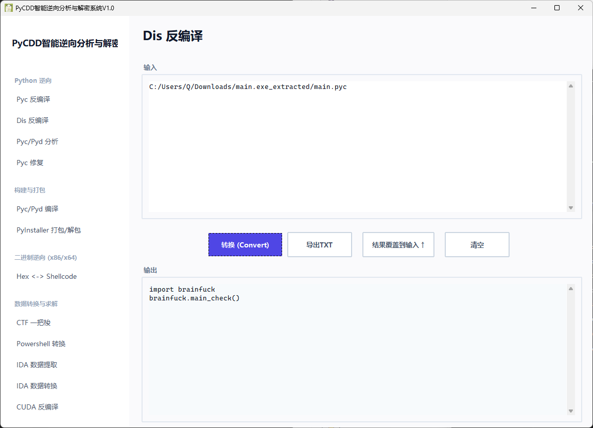
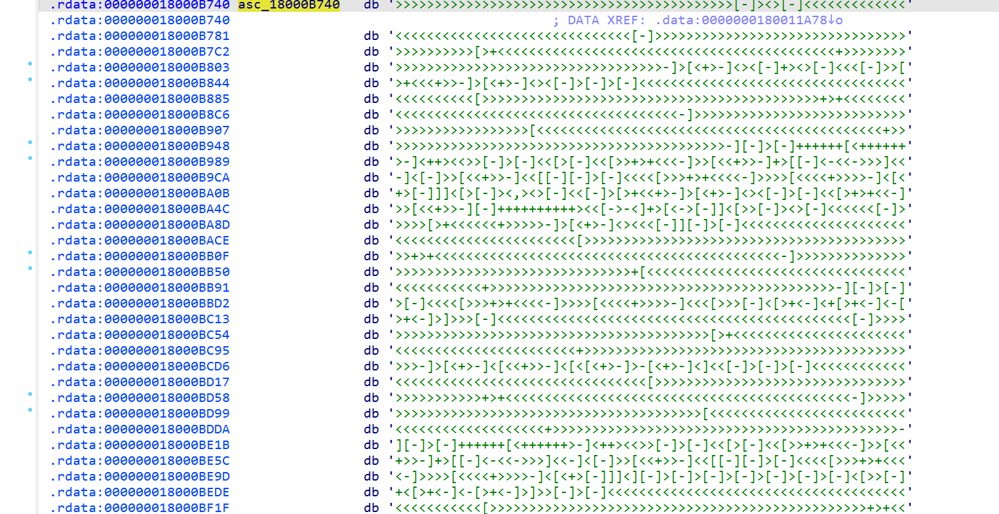
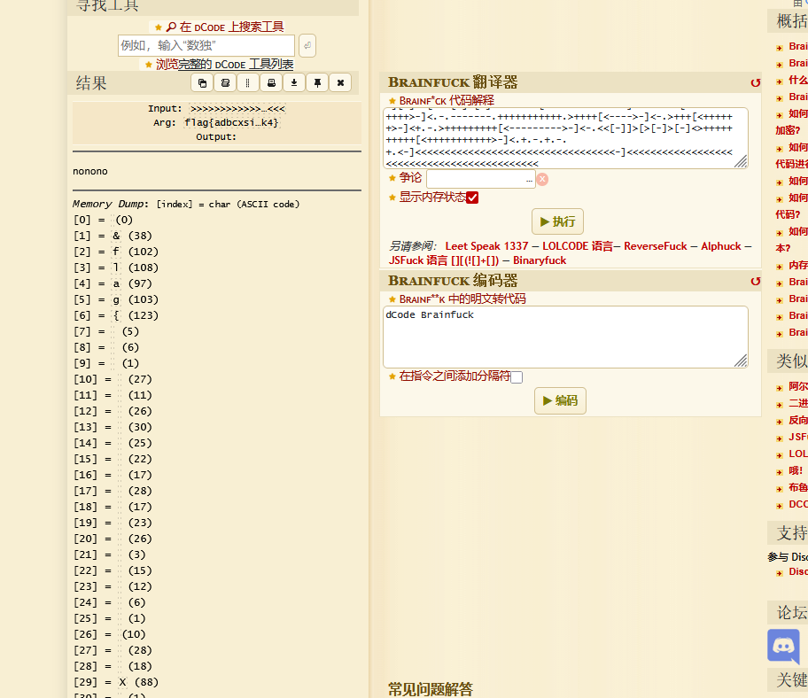

strange language
brainfuck 逆向
拿到附件发现是python打包的文件
我们解包然后反编译一下

发现调用了一个brainfuck 我们找到这个文件 发现是一个pyd文件
我们ida打开看看有什么东西能分析的 看看字符串 发现一个有bf语言的特征

我们提取
>>>>>>>>>>>>>>>>>>>>>>>>>>>>>>>>>>>>>>>>>>>[-]><>[-]<<<<<<<<<<<<<<<<<<<<<<<<<<<<<<<<<<<<<<<<<<<[-]>>>>>>>>>>>>>>>>>>>>>>>>>>>>>>>>>>>>>>>>>>[>+<<<<<<<<<<<<<<<<<<<<<<<<<<<<<<<<<<<<<<<<<<<+>>>>>>>>>>>>>>>>>>>>>>>>>>>>>>>>>>>>>>>>>>-]>[<+>-]<><[-]+><>[-]<<<[-]>>[>+<<<+>>-]>[<+>-]<><[-]>[-]>[-]<<<<<<<<<<<<<<<<<<<<<<<<<<<<<<<<<<<<<<<<<<<<[>>>>>>>>>>>>>>>>>>>>>>>>>>>>>>>>>>>>>>>>>>>+>+<<<<<<<<<<<<<<<<<<<<<<<<<<<<<<<<<<<<<<<<<<<<-]>>>>>>>>>>>>>>>>>>>>>>>>>>>>>>>>>>>>>>>>>>>>[<<<<<<<<<<<<<<<<<<<<<<<<<<<<<<<<<<<<<<<<<<<<+>>>>>>>>>>>>>>>>>>>>>>>>>>>>>>>>>>>>>>>>>>>>-][-]>[-]++++++[<++++++>-]<++><<>>[-]>[-]<<[>[-]<<[>>+>+<<<-]>>[<<+>>-]+>[[-]<-<<->>>]<<-]<[-]>>[<<+>>-]<<[[-][-]>[-]<<<<[>>>+>+<<<<-]>>>>[<<<<+>>>>-]<[<+>[-]]]<[>[-]><,><>[-]<<[-]>[>+<<+>-]>[<+>-]<><[-]>[-]<<[>+>+<<-]>>[<<+>>-][-]++++++++++><<[->-<]+>[<->[-]]<[>>[-]><>[-]<<<<<<[-]>>>>>[>+<<<<<<+>>>>>-]>[<+>-]<><<<[-]][-]>[-]<<<<<<<<<<<<<<<<<<<<<<<<<<<<<<<<<<<<<<<<<<<<[>>>>>>>>>>>>>>>>>>>>>>>>>>>>>>>>>>>>>>>>>>>+>+<<<<<<<<<<<<<<<<<<<<<<<<<<<<<<<<<<<<<<<<<<<<-]>>>>>>>>>>>>>>>>>>>>>>>>>>>>>>>>>>>>>>>>>>>>+[<<<<<<<<<<<<<<<<<<<<<<<<<<<<<<<<<<<<<<<<<<<<+>>>>>>>>>>>>>>>>>>>>>>>>>>>>>>>>>>>>>>>>>>>>-][-]>[-]>[-]<<<<[>>>+>+<<<<-]>>>>[<<<<+>>>>-]<<<[>>>[-]<[>+<-]<+[>+<-]<-[>+<-]>]>>>[-]<<<<<<<<<<<<<<<<<<<<<<<<<<<<<<<<<<<<<<<<<<<<<[-]>>>>>>>>>>>>>>>>>>>>>>>>>>>>>>>>>>>>>>>>>>>>[>+<<<<<<<<<<<<<<<<<<<<<<<<<<<<<<<<<<<<<<<<<<<<<+>>>>>>>>>>>>>>>>>>>>>>>>>>>>>>>>>>>>>>>>>>>>-]>[<+>-]<[<<+>>-]<[<[<+>-]>-[<+>-]<]<<[-]>[-]>[-]<<<<<<<<<<<<<<<<<<<<<<<<<<<<<<<<<<<<<<<<<<<<[>>>>>>>>>>>>>>>>>>>>>>>>>>>>>>>>>>>>>>>>>>>+>+<<<<<<<<<<<<<<<<<<<<<<<<<<<<<<<<<<<<<<<<<<<<-]>>>>>>>>>>>>>>>>>>>>>>>>>>>>>>>>>>>>>>>>>>>>[<<<<<<<<<<<<<<<<<<<<<<<<<<<<<<<<<<<<<<<<<<<<+>>>>>>>>>>>>>>>>>>>>>>>>>>>>>>>>>>>>>>>>>>>>-][-]>[-]++++++[<++++++>-]<++><<>>[-]>[-]<<[>[-]<<[>>+>+<<<-]>>[<<+>>-]+>[[-]<-<<->>>]<<-]<[-]>>[<<+>>-]<<[[-][-]>[-]<<<<[>>>+>+<<<<-]>>>>[<<<<+>>>>-]<[<+>[-]]]<][-]>[-]>[-]>[-]>[-]>[-]>[-]<[>>[-]+<[>+<-]<-[>+<-]>]>>[-]>[-]<<<<<<<<<<<<<<<<<<<<<<<<<<<<<<<<<<<<<<<<<<<<<<<<<[>>>>>>>>>>>>>>>>>>>>>>>>>>>>>>>>>>>>>>>>>>>>>>>>+>+<<<<<<<<<<<<<<<<<<<<<<<<<<<<<<<<<<<<<<<<<<<<<<<<<-]>>>>>>>>>>>>>>>>>>>>>>>>>>>>>>>>>>>>>>>>>>>>>>>>>[<<<<<<<<<<<<<<<<<<<<<<<<<<<<<<<<<<<<<<<<<<<<<<<<<+>>>>>>>>>>>>>>>>>>>>>>>>>>>>>>>>>>>>>>>>>>>>>>>>>-]<[<<+>>-]<[<[<+>-]>-[<+>-]<][-]>[-]++++++++++[<++++++++++>-]<++><<[->-<]+>[<->[-]]<[[-][-]+>[-]<[>>[-]+<[>+<-]<-[>+<-]>]>>[-]>[-]<<<<<<<<<<<<<<<<<<<<<<<<<<<<<<<<<<<<<<<<<<<<<<<<<[>>>>>>>>>>>>>>>>>>>>>>>>>>>>>>>>>>>>>>>>>>>>>>>>+>+<<<<<<<<<<<<<<<<<<<<<<<<<<<<<<<<<<<<<<<<<<<<<<<<<-]>>>>>>>>>>>>>>>>>>>>>>>>>>>>>>>>>>>>>>>>>>>>>>>>>[<<<<<<<<<<<<<<<<<<<<<<<<<<<<<<<<<<<<<<<<<<<<<<<<<+>>>>>>>>>>>>>>>>>>>>>>>>>>>>>>>>>>>>>>>>>>>>>>>>>-]<[<<+>>-]<[<[<+>-]>-[<+>-]<][-]>[-]+++++++++[<++++++++++++>-]<><<[->-<]+>[<->[-]]<[<+>[-]]]<[[-][-]++>[-]<[>>[-]+<[>+<-]<-[>+<-]>]>>[-]>[-]<<<<<<<<<<<<<<<<<<<<<<<<<<<<<<<<<<<<<<<<<<<<<<<<[>>>>>>>>>>>>>>>>>>>>>>>>>>>>>>>>>>>>>>>>>>>>>>>+>+<<<<<<<<<<<<<<<<<<<<<<<<<<<<<<<<<<<<<<<<<<<<<<<<-]>>>>>>>>>>>>>>>>>>>>>>>>>>>>>>>>>>>>>>>>>>>>>>>>[<<<<<<<<<<<<<<<<<<<<<<<<<<<<<<<<<<<<<<<<<<<<<<<<+>>>>>>>>>>>>>>>>>>>>>>>>>>>>>>>>>>>>>>>>>>>>>>>>-]<[<<+>>-]<[<[<+>-]>-[<+>-]<][-]>[-]++++++++[<++++++++++++>-]<+><<[->-<]+>[<->[-]]<[<+>[-]]]<[[-][-]+++>[-]<[>>[-]+<[>+<-]<-[>+<-]>]>>[-]>[-]<<<<<<<<<<<<<<<<<<<<<<<<<<<<<<<<<<<<<<<<<<<<<<<[>>>>>>>>>>>>>>>>>>>>>>>>>>>>>>>>>>>>>>>>>>>>>>+>+<<<<<<<<<<<<<<<<<<<<<<<<<<<<<<<<<<<<<<<<<<<<<<<-]>>>>>>>>>>>>>>>>>>>>>>>>>>>>>>>>>>>>>>>>>>>>>>>[<<<<<<<<<<<<<<<<<<<<<<<<<<<<<<<<<<<<<<<<<<<<<<<+>>>>>>>>>>>>>>>>>>>>>>>>>>>>>>>>>>>>>>>>>>>>>>>-]<[<<+>>-]<[<[<+>-]>-[<+>-]<][-]>[-]++++++++[<+++++++++++++>-]<-><<[->-<]+>[<->[-]]<[<+>[-]]]<[[-][-]++++>[-]<[>>[-]+<[>+<-]<-[>+<-]>]>>[-]>[-]<<<<<<<<<<<<<<<<<<<<<<<<<<<<<<<<<<<<<<<<<<<<<<[>>>>>>>>>>>>>>>>>>>>>>>>>>>>>>>>>>>>>>>>>>>>>+>+<<<<<<<<<<<<<<<<<<<<<<<<<<<<<<<<<<<<<<<<<<<<<<-]>>>>>>>>>>>>>>>>>>>>>>>>>>>>>>>>>>>>>>>>>>>>>>[<<<<<<<<<<<<<<<<<<<<<<<<<<<<<<<<<<<<<<<<<<<<<<+>>>>>>>>>>>>>>>>>>>>>>>>>>>>>>>>>>>>>>>>>>>>>>-]<[<<+>>-]<[<[<+>-]>-[<+>-]<][-]>[-]+++++++++++[<+++++++++++>-]<++><<[->-<]+>[<->[-]]<[<+>[-]]]<[[-][-]>[-]++++++[<++++++>-]<+>[-]<[>>[-]+<[>+<-]<-[>+<-]>]>>[-]>[-]<<<<<<<<<<<<<<<<<<<<<<<<<<<<<<<<<<<<<<<<<<<<<[>>>>>>>>>>>>>>>>>>>>>>>>>>>>>>>>>>>>>>>>>>>>+>+<<<<<<<<<<<<<<<<<<<<<<<<<<<<<<<<<<<<<<<<<<<<<-]>>>>>>>>>>>>>>>>>>>>>>>>>>>>>>>>>>>>>>>>>>>>>[<<<<<<<<<<<<<<<<<<<<<<<<<<<<<<<<<<<<<<<<<<<<<+>>>>>>>>>>>>>>>>>>>>>>>>>>>>>>>>>>>>>>>>>>>>>-]<[<<+>>-]<[<[<+>-]>-[<+>-]<][-]>[-]+++++++++[<++++++++++++++>-]<-><<[->-<]+>[<->[-]]<[<+>[-]]]<>[-]<<[-]>[>+<<+>-]>[<+>-]<><[-]>[-]+>[-]>[-]<<<<<[>>>>+>+<<<<<-]>>>>>[<<<<<+>>>>>-]<>[-]+<[>-<[-]]>[<+>-]<[<<+>->[-]]<[[-]>[-]<<<[>>+>+<<<-]>>>[<<<+>>>-]<>[-]+<[>-<[-]]>[<+>-]<[<+>[-]]][-]+<[>->[-]>[-]<>++++++++++[<+++++++++++>-]<.+.-.+.-.+.<<[-]]>[>>>>>>>>>>>>>>>>>>>>>>>>>>>>>>>>>[-]+><>[-]<<<<<<<<<<<<<<<<<<<<<<<<<<<<<<<<<<<<<[-]>>>>>>>>>>>>>>>>>>>>>>>>>>>>>>>>>>>>[>+<<<<<<<<<<<<<<<<<<<<<<<<<<<<<<<<<<<<<+>>>>>>>>>>>>>>>>>>>>>>>>>>>>>>>>>>>>-]>[<+>-]<><<<<<<<<<<<<<<<<<<<<<<<<<<<<<<<<<[-]>[-]+++++++[<++++++++++++>-]<->[-]+++++++++++++++>[-]>[-]+++++++++[<++++++++++>-]<>[-]>[-]+++++++[<++++++++++++>-]<>[-]>[-]++++++++[<++++++++++>-]<>[-]>[-]+++++++[<++++++++++++>-]<+>[-]+++>[-]++>[-]>[-]+++++++>[-]>[-]+++++++[<++++++++++++>-]<++>[-]+++++++>[-]+++++++>[-]>[-]+++++++[<+++++++++++++>-]<>[-]+++++++++>[-]>[-]>[-]++++++++[<++++++++++>-]<>[-]+++++>[-]++>[-]+++>[-]>[-]+++++++[<+++++++++++++>-]<++>[-]>[-]+++++++[<+++++++++++++>-]<+>[-]>[-]++++++++[<++++++++++>-]<>[-]>[-]+++++++++[<+++++++++>-]<>[-]>[-]+++++++++[<+++++++++>-]<+>[-]>[-]+++++++[<++++++++++++>-]<>[-]>[-]+++++++++[<++++++++++>-]<>[-]>[-]++++++++[<++++++++++++>-]<->[-]++>[-]>[-]++++++++[<+++++++++++>-]<->[-]+++++++>[-]>[-]++++[<+++++++++++++>-]<>><[-]+++++><>[-]<<<<<<<<<<<<<<<<<<<<<<<<<<<<<<<<<<<<<<[-]>>>>>>>>>>>>>>>>>>>>>>>>>>>>>>>>>>>>>[>+<<<<<<<<<<<<<<<<<<<<<<<<<<<<<<<<<<<<<<+>>>>>>>>>>>>>>>>>>>>>>>>>>>>>>>>>>>>>-]>[<+>-]<><[-]>[-]<<<<<<<<<<<<<<<<<<<<<<<<<<<<<<<<<<<<<<[>>>>>>>>>>>>>>>>>>>>>>>>>>>>>>>>>>>>>+>+<<<<<<<<<<<<<<<<<<<<<<<<<<<<<<<<<<<<<<-]>>>>>>>>>>>>>>>>>>>>>>>>>>>>>>>>>>>>>>[<<<<<<<<<<<<<<<<<<<<<<<<<<<<<<<<<<<<<<+>>>>>>>>>>>>>>>>>>>>>>>>>>>>>>>>>>>>>>-][-]>[-]++++++[<++++++>-]<><<>>[-]>[-]<<[>[-]<<[>>+>+<<<-]>>[<<+>>-]+>[[-]<-<<->>>]<<-]<[-]>>[<<+>>-]<<[[-]>[-]<<<<<<<<<<<<<<<<<<<<<<<<<<<<<<<<<<<<<<[>>>>>>>>>>>>>>>>>>>>>>>>>>>>>>>>>>>>>+>+<<<<<<<<<<<<<<<<<<<<<<<<<<<<<<<<<<<<<<-]>>>>>>>>>>>>>>>>>>>>>>>>>>>>>>>>>>>>>>[<<<<<<<<<<<<<<<<<<<<<<<<<<<<<<<<<<<<<<+>>>>>>>>>>>>>>>>>>>>>>>>>>>>>>>>>>>>>>-][-]>[-]>[-]<<<<<<<<<<<<<<<<<<<<<<<<<<<<<<<<<<<<<<<<[>>>>>>>>>>>>>>>>>>>>>>>>>>>>>>>>>>>>>>>+>+<<<<<<<<<<<<<<<<<<<<<<<<<<<<<<<<<<<<<<<<-]>>>>>>>>>>>>>>>>>>>>>>>>>>>>>>>>>>>>>>>>[<<<<<<<<<<<<<<<<<<<<<<<<<<<<<<<<<<<<<<<<+>>>>>>>>>>>>>>>>>>>>>>>>>>>>>>>>>>>>>>>>-][-]<[>>[-]+<[>+<-]<-[>+<-]>]>>[-]>[-]<<<<<<<<<<<<<<<<<<<<<<<<<<<<<<<<<<<<<<<<<<<<<<<<<<<<<<<<<<<<<<<<<<<<<<<<<<<<<<<<[>>>>>>>>>>>>>>>>>>>>>>>>>>>>>>>>>>>>>>>>>>>>>>>>>>>>>>>>>>>>>>>>>>>>>>>>>>>>>>>+>+<<<<<<<<<<<<<<<<<<<<<<<<<<<<<<<<<<<<<<<<<<<<<<<<<<<<<<<<<<<<<<<<<<<<<<<<<<<<<<<<-]>>>>>>>>>>>>>>>>>>>>>>>>>>>>>>>>>>>>>>>>>>>>>>>>>>>>>>>>>>>>>>>>>>>>>>>>>>>>>>>>[<<<<<<<<<<<<<<<<<<<<<<<<<<<<<<<<<<<<<<<<<<<<<<<<<<<<<<<<<<<<<<<<<<<<<<<<<<<<<<<<+>>>>>>>>>>>>>>>>>>>>>>>>>>>>>>>>>>>>>>>>>>>>>>>>>>>>>>>>>>>>>>>>>>>>>>>>>>>>>>>>-]<[<<+>>-]<[<[<+>-]>-[<+>-]<][-]>[-]<<<<<<<<<<<<<<<<<<<<<<<<<<<<<<<<<<<<<<<<<[>>>>>>>>>>>>>>>>>>>>>>>>>>>>>>>>>>>>>>>>+>+<<<<<<<<<<<<<<<<<<<<<<<<<<<<<<<<<<<<<<<<<-]>>>>>>>>>>>>>>>>>>>>>>>>>>>>>>>>>>>>>>>>>[<<<<<<<<<<<<<<<<<<<<<<<<<<<<<<<<<<<<<<<<<+>>>>>>>>>>>>>>>>>>>>>>>>>>>>>>>>>>>>>>>>>-][-]+><<>[<+>-][-]<[>>[-]+<[>+<-]<-[>+<-]>]>>[-]>[-]<<<<<<<<<<<<<<<<<<<<<<<<<<<<<<<<<<<<<<<<<<<<<<<<<<<<<<<<<<<<<<<<<<<<<<<<<<<<<<<<<[>>>>>>>>>>>>>>>>>>>>>>>>>>>>>>>>>>>>>>>>>>>>>>>>>>>>>>>>>>>>>>>>>>>>>>>>>>>>>>>>+>+<<<<<<<<<<<<<<<<<<<<<<<<<<<<<<<<<<<<<<<<<<<<<<<<<<<<<<<<<<<<<<<<<<<<<<<<<<<<<<<<<-]>>>>>>>>>>>>>>>>>>>>>>>>>>>>>>>>>>>>>>>>>>>>>>>>>>>>>>>>>>>>>>>>>>>>>>>>>>>>>>>>>[<<<<<<<<<<<<<<<<<<<<<<<<<<<<<<<<<<<<<<<<<<<<<<<<<<<<<<<<<<<<<<<<<<<<<<<<<<<<<<<<<+>>>>>>>>>>>>>>>>>>>>>>>>>>>>>>>>>>>>>>>>>>>>>>>>>>>>>>>>>>>>>>>>>>>>>>>>>>>>>>>>>-]<[<<+>>-]<[<[<+>-]>-[<+>-]<]<<>>>>>>>[-]>>[-]<[-]--------[++++++++<<[-]<[-]<[-]<[-]<[-]++<<[->>-[>+>>+<<<-]>[<+>-]>>>>+<<-[<+<<++>>>>>--<<+]<<<<<]>>>>[<<<<+>>>>-]<<[-]++<[->-[>+>>+<<<-]>[<+>-]>>>+<-[>--<<+<<++>>>+]<<<<]>>>[<<<+>>>-]>>[>-<-]>[[-]<<+>>]>[<+<+>>-]<[>+<-]<[<[<+>-]<[>++<-]>>-]<[>>>>+<<<<-]>>>-------]>[<<<<<<<<<+>>>>>>>>>-]<<<<<<<<<<<[>>>[-]<[>+<-]<+[>+<-]<-[>+<-]>]>>>[-]<<<<<<<<<<<<<<<<<<<<<<<<<<<<<<<<<<<<<<<<<<<<<<<<<<<<<<<<<<<<<<<<<<<<<<<<<<<<<<[-]>>>>>>>>>>>>>>>>>>>>>>>>>>>>>>>>>>>>>>>>>>>>>>>>>>>>>>>>>>>>>>>>>>>>>>>>>>>>>[>+<<<<<<<<<<<<<<<<<<<<<<<<<<<<<<<<<<<<<<<<<<<<<<<<<<<<<<<<<<<<<<<<<<<<<<<<<<<<<<+>>>>>>>>>>>>>>>>>>>>>>>>>>>>>>>>>>>>>>>>>>>>>>>>>>>>>>>>>>>>>>>>>>>>>>>>>>>>>-]>[<+>-]<[<<+>>-]<[<[<+>-]>-[<+>-]<]<[-]>[-]<<<<<<<<<<<<<<<<<<<<<<<<<<<<<<<<<<<<<<[>>>>>>>>>>>>>>>>>>>>>>>>>>>>>>>>>>>>>+>+<<<<<<<<<<<<<<<<<<<<<<<<<<<<<<<<<<<<<<-]>>>>>>>>>>>>>>>>>>>>>>>>>>>>>>>>>>>>>>+[<<<<<<<<<<<<<<<<<<<<<<<<<<<<<<<<<<<<<<+>>>>>>>>>>>>>>>>>>>>>>>>>>>>>>>>>>>>>>-]<[-]>[-]<<<<<<<<<<<<<<<<<<<<<<<<<<<<<<<<<<<<<<[>>>>>>>>>>>>>>>>>>>>>>>>>>>>>>>>>>>>>+>+<<<<<<<<<<<<<<<<<<<<<<<<<<<<<<<<<<<<<<-]>>>>>>>>>>>>>>>>>>>>>>>>>>>>>>>>>>>>>>[<<<<<<<<<<<<<<<<<<<<<<<<<<<<<<<<<<<<<<+>>>>>>>>>>>>>>>>>>>>>>>>>>>>>>>>>>>>>>-][-]>[-]++++++[<++++++>-]<><<>>[-]>[-]<<[>[-]<<[>>+>+<<<-]>>[<<+>>-]+>[[-]<-<<->>>]<<-]<[-]>>[<<+>>-]<<][-]><>[-]<<<<<<<<<<<<<<<<<<<<<<<<<<<<<<<<<<<<<<[-]>>>>>>>>>>>>>>>>>>>>>>>>>>>>>>>>>>>>>[>+<<<<<<<<<<<<<<<<<<<<<<<<<<<<<<<<<<<<<<+>>>>>>>>>>>>>>>>>>>>>>>>>>>>>>>>>>>>>-]>[<+>-]<><[-]>[-]<<<<<<<<<<<<<<<<<<<<<<<<<<<<<<<<<<<<<<[>>>>>>>>>>>>>>>>>>>>>>>>>>>>>>>>>>>>>+>+<<<<<<<<<<<<<<<<<<<<<<<<<<<<<<<<<<<<<<-]>>>>>>>>>>>>>>>>>>>>>>>>>>>>>>>>>>>>>>[<<<<<<<<<<<<<<<<<<<<<<<<<<<<<<<<<<<<<<+>>>>>>>>>>>>>>>>>>>>>>>>>>>>>>>>>>>>>>-][-]>[-]++++[<++++++++>-]<><<>>[-]>[-]<<[>[-]<<[>>+>+<<<-]>>[<<+>>-]+>[[-]<-<<->>>]<<-]<[-]>>[<<+>>-]<<[[-]+++++>[-]>[-]<<<<<<<<<<<<<<<<<<<<<<<<<<<<<<<<<<<<<<<[>>>>>>>>>>>>>>>>>>>>>>>>>>>>>>>>>>>>>>+>+<<<<<<<<<<<<<<<<<<<<<<<<<<<<<<<<<<<<<<<-]>>>>>>>>>>>>>>>>>>>>>>>>>>>>>>>>>>>>>>>[<<<<<<<<<<<<<<<<<<<<<<<<<<<<<<<<<<<<<<<+>>>>>>>>>>>>>>>>>>>>>>>>>>>>>>>>>>>>>>>-]<<>[<+>-][-]<[>>[-]+<[>+<-]<-[>+<-]>]>>[-]>[-]<<<<<<<<<<<<<<<<<<<<<<<<<<<<<<<<<<<<<<<<<<<<<<<<<<<<<<<<<<<<<<<<<<<<<<<<<<<<<<[>>>>>>>>>>>>>>>>>>>>>>>>>>>>>>>>>>>>>>>>>>>>>>>>>>>>>>>>>>>>>>>>>>>>>>>>>>>>>+>+<<<<<<<<<<<<<<<<<<<<<<<<<<<<<<<<<<<<<<<<<<<<<<<<<<<<<<<<<<<<<<<<<<<<<<<<<<<<<<-]>>>>>>>>>>>>>>>>>>>>>>>>>>>>>>>>>>>>>>>>>>>>>>>>>>>>>>>>>>>>>>>>>>>>>>>>>>>>>>[<<<<<<<<<<<<<<<<<<<<<<<<<<<<<<<<<<<<<<<<<<<<<<<<<<<<<<<<<<<<<<<<<<<<<<<<<<<<<<+>>>>>>>>>>>>>>>>>>>>>>>>>>>>>>>>>>>>>>>>>>>>>>>>>>>>>>>>>>>>>>>>>>>>>>>>>>>>>>-]<[<<+>>-]<[<[<+>-]>-[<+>-]<][-]>[-]<<<<<<<<<<<<<<<<<<<<<<<<<<<<<<<<<<<<<<<[>>>>>>>>>>>>>>>>>>>>>>>>>>>>>>>>>>>>>>+>+<<<<<<<<<<<<<<<<<<<<<<<<<<<<<<<<<<<<<<<-]>>>>>>>>>>>>>>>>>>>>>>>>>>>>>>>>>>>>>>>[<<<<<<<<<<<<<<<<<<<<<<<<<<<<<<<<<<<<<<<+>>>>>>>>>>>>>>>>>>>>>>>>>>>>>>>>>>>>>>>-][-]<[>>[-]+<[>+<-]<-[>+<-]>]>>[-]>[-]<<<<<<<<<<<<<<<<<<<<<<<<<<<<<<<<<<<<[>>>>>>>>>>>>>>>>>>>>>>>>>>>>>>>>>>>+>+<<<<<<<<<<<<<<<<<<<<<<<<<<<<<<<<<<<<-]>>>>>>>>>>>>>>>>>>>>>>>>>>>>>>>>>>>>[<<<<<<<<<<<<<<<<<<<<<<<<<<<<<<<<<<<<+>>>>>>>>>>>>>>>>>>>>>>>>>>>>>>>>>>>>-]<[<<+>>-]<[<[<+>-]>-[<+>-]<]<<[->-<]>[<+>[-]]<[>>[-]><>[-]<<<<<<<<<<<<<<<<<<<<<<<<<<<<<<<<<<<<<<<[-]>>>>>>>>>>>>>>>>>>>>>>>>>>>>>>>>>>>>>>[>+<<<<<<<<<<<<<<<<<<<<<<<<<<<<<<<<<<<<<<<+>>>>>>>>>>>>>>>>>>>>>>>>>>>>>>>>>>>>>>-]>[<+>-]<><<<[-]][-]>[-]<<<<<<<<<<<<<<<<<<<<<<<<<<<<<<<<<<<<<<[>>>>>>>>>>>>>>>>>>>>>>>>>>>>>>>>>>>>>+>+<<<<<<<<<<<<<<<<<<<<<<<<<<<<<<<<<<<<<<-]>>>>>>>>>>>>>>>>>>>>>>>>>>>>>>>>>>>>>>+[<<<<<<<<<<<<<<<<<<<<<<<<<<<<<<<<<<<<<<+>>>>>>>>>>>>>>>>>>>>>>>>>>>>>>>>>>>>>>-]<[-]>[-]<<<<<<<<<<<<<<<<<<<<<<<<<<<<<<<<<<<<<<[>>>>>>>>>>>>>>>>>>>>>>>>>>>>>>>>>>>>>+>+<<<<<<<<<<<<<<<<<<<<<<<<<<<<<<<<<<<<<<-]>>>>>>>>>>>>>>>>>>>>>>>>>>>>>>>>>>>>>>[<<<<<<<<<<<<<<<<<<<<<<<<<<<<<<<<<<<<<<+>>>>>>>>>>>>>>>>>>>>>>>>>>>>>>>>>>>>>>-][-]>[-]++++[<++++++++>-]<><<>>[-]>[-]<<[>[-]<<[>>+>+<<<-]>>[<<+>>-]+>[[-]<-<<->>>]<<-]<[-]>>[<<+>>-]<<][-]>[-]<<<<<<<<<<<<<<<<<<<<<<<<<<<<<<<<<<<<<[>>>>>>>>>>>>>>>>>>>>>>>>>>>>>>>>>>>>+>+<<<<<<<<<<<<<<<<<<<<<<<<<<<<<<<<<<<<<-]>>>>>>>>>>>>>>>>>>>>>>>>>>>>>>>>>>>>>[<<<<<<<<<<<<<<<<<<<<<<<<<<<<<<<<<<<<<+>>>>>>>>>>>>>>>>>>>>>>>>>>>>>>>>>>>>>-][-]+<[>->[-]>[-]<>++++++[<+++++++++++>-]<+.>++++[<+++++++++++>-]<.-.-------.+++++++++++.>++++[<---->-]<-.>+++[<++++++>-]<+.-.>+++++++++[<--------->-]<-.<<[-]]>[>[-]>[-]<>++++++++++[<+++++++++++>-]<.+.-.+.-.+.<-]<<<<<<<<<<<<<<<<<<<<<<<<<<<<<<<<<<-]<<<<<<<<<<<<<<<<<<<<<<<<<<<<<<<<<<<<<<<<<<<<
下载工具保存进去 链接 https://github.com/eterevsky/bfc
然后make打包一下
sudo apt update
sudo apt install -y git build-essential
git clone https://github.com/eterevsky/bfc.git
cd bfc
make
使用
./bfc 1.bf 1.c
gcc 1.c -o 1
其实出来看1.c就可以了 gcc是为了动调的
- 静态分析 加 猜 哈哈哈
从1.c中能发现 有一个常量表
p[33] = 5;
p[34] = 36;
p[-3] = 1;
p[1] = 83;
p[2] = 15;
p[3] = 90;
p[4] = 84;
p[5] = 80;
p[6] = 85;
p[7] = 3;
p[8] = 2;
p[9] = 0;
p[10] = 7;
p[11] = 86;
p[12] = 7;
p[13] = 7;
p[14] = 91;
p[15] = 9;
p[16] = 0;
p[17] = 80;
p[18] = 5;
p[19] = 2;
p[20] = 3;
p[21] = 93;
p[22] = 92;
p[23] = 80;
p[24] = 81;
p[25] = 82;
p[26] = 84;
p[27] = 90;
p[28] = 95;
p[29] = 2;
p[30] = 87;
p[31] = 7;
p[32] = 52;
p[-4] = 5;
p[35] = 0;
p[36] = 0;
这段非常像“按 bit 处理 8 次”的逻辑
enlarge(p, 7);
p[5] = 0;
p[7] = 0;
p[6] = - 8;
/* 826: [++++++++<<[-]<[-]<[-]<[-]<[-]++<< */
while (p[6]) {
p[6] += 8;
p[4] = 0;
p[3] = 0;
p[2] = 0;
p[1] = 0;
p[0] = 2;
它本质上循环 8 次，也就是处理一个字节的 8 个 bit。中间一堆
/* 837: [->>-[>+>>+<<<-]>[<+>-]>>>>+<<-[<+<<++>>>>>--<<+]<<<<<] */
while (p[-2]) {
int i2 = p[0];
int i4 = p[3];
p[-2]--;
p[0] = - i2 + p[1] - 2*i4 + 3;
p[1] = 0;
p[3] = 0;
p[5] += 2*i2 + 2*i4 - 3;
p[2] -= i2 + i4 - 2;
}
/* 844: >>>>[<<<<+>>>>-]<<[-]++< */
p[-2] += p[2];
p[2] = 0;
p[0] = 2;
/* 849: [->-[>+>>+<<<-]>[<+>-]>>>+<-[>--<<+<<++>>>+]<<<<] */
while (p[-1]) {
int i2 = p[0];
int i4 = p[3];
p[-1]--;
p[0] = - i2 + p[1] - 2*i4 + 3;
p[1] = 0;
p[3] = 0;
p[4] += 2*i2 + 2*i4 - 3;
p[2] -= i2 + i4 - 2;
}
这种操作，是 Brainfuck 里用加减和移动指针模拟“取最低位、比较、左移累加” 简化后，这段逻辑等价于
unsigned char calc(unsigned char a, unsigned char b)
{
unsigned char r = 0;
for (int i = 0; i < 8; i++) {
int abit = a & 1;
int bbit = b & 1;
if (abit != bbit)
r |= 1 << i;
a >>= 1;
b >>= 1;
}
return r;
}
而这个函数就是
return a ^ b;
因为异或的规则就是
0 ^ 0 = 0
0 ^ 1 = 1
1 ^ 0 = 1
1 ^ 1 = 0
也就是“两个 bit 不一样时为 1，一样时为 0” 所以这个题的校验逻辑可以简化成
check[i] == flag_mid[i] ^ flag_mid[i + 1]
举个最直观的例子
'd' ^ '7'
= 0x64 ^ 0x37
= 0x53
= 83
而源码校验表第一个数正好是 83 再看第二个
'7' ^ '8'
= 0x37 ^ 0x38
= 0x0f
= 15
源码第二个数正好是 15
- 动调可以看出来
在ida中可以多运行几轮 记得长度输入要够 要不然运行不到下面
- 查看内存可以看出来
使用这个网址 www.dcode.fr/brainfuck-language 从争论处输入尝试的flag 能看出来他进行了异或操作

exp
check = [83,15,90,84,80,85,3,2,0,7,86,7,7,91,9,0,
80,5,2,3,93,92,80,81,82,84,90,95,2,87,7,52]
s = ['?'] * 32
s[31] = chr(check[31])
for i in range(30, -1, -1):
s[i] = chr(check[i] ^ ord(s[i + 1]))
print('flag{' + ''.join(s) + '}')
flag
flag{d78b6f30225cdc811adfe8d4e7c9fd34}
评论